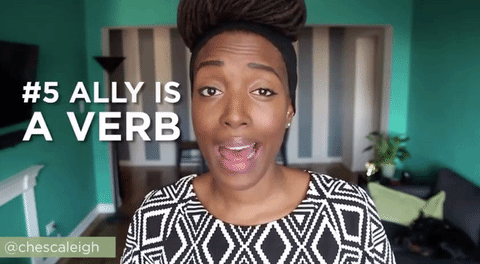

30 March 2018
Enquanto tecnologistas qual nossa parcela de contribuição quanto as injustiças sociais?
Minha resposta é: uma boa parte de contribuição.
Quando não nos perguntamos as bases da construção de qualquer tecnologia, nós podemos perpetuar injustiças.
A computação no final das contas é "segui as instruções de um ser humano", repetidamente. A computação trouxe facilidades nas nossas decisões diárias, mas como isso é construído?
"Eu só programo meu Rails/Django/React/etc, o que é que eu tenho a ver?"
Quando se é uma Mulher Negra tecnologista, você sabe que ser da área de Tecnologia/Computação não é só uma profissão, é um ato político também.
Ser Mulher Negra, se dizer ser Mulher Negra, viver a negritude, trabalhar, predominar em uma profissão - ainda dominada pela branquitude - é um ato político, porque estou aonde não deveria está de acordo com a lógica social que vivemos.
Há uma frase da Angela Davis sobre o movimento das Mulheres Negras:
"Quando a mulher negra se movimenta, toda a estrutura da sociedade se movimenta com ela"
Eu e tantas outras Mulheres Negras sabemos o papel que uma tecnologia racista tem em nossas vidas.

Aliado/Aliada são verbos.
Link pro vídeo da Franchesca (a que está no gif acima) ao lado ->
A luta das Mulheres Negras é por dar acesso a esse grupo os mesmos direitos que pessoas brancas possuem, e não tirar direitos de alguém. Quando você branco luta - também, ao lado - contra o racismo, você está lutando por um mundo melhor para você e todas as pessoas a seu redor. Ninguém perde quando se dá voz a quem não tinha direito a ter voz.
Isso é justiça na vida real e no campo da Computação também.
Ovetta Sampson nos questiona com seu texto. Ela relata a conversa que teve com uma pessoa sobre isso, e já começa o texto falando do vídeo de um rapaz que tenta utlizar um dispenser de sabão:
Agora vamos a um relatório da Propublica sobre o sistema Compas.
O Compas é um algortimo que se propoe a calcular a reincidencia de uma pessoa réu em julgamento nos Estados Unidos. A partir de uma investigação da Propublica: "[...]Os dados mostraram que os acusados negros tinham duas vezes mais chances de serem erroneamente rotulados como de maior risco do que os réus brancos.[...]" no sistema.
A empresa do algoritmo se negou a divulgar como o algoritmo tomava a decisão, mas fica evidente que o "código neutro" do programa não levou em consideração todo o historico opressor a que pessoas negras são expostas em suas vidas. O algoritmo ainda não consegue processar as complexidades das nossas relações sociais. Ou pelo menos nós seres humanos ainda não conseguimos "programar" as máquinas para tal.
E ...
Algoritmos que classificam nomes afro-descendentes como não "agradaveis".
A tecnologia não é racista, mas ela aprende de nós como ser.
Existem muitas iniciativas voltadas pra discuti sobre o viés algortimico. Alguma delas:
MathWashing(vou traduzi livremente para Cegueira Matemática): algoritmos não são neutros, pense criticamente, exija transparência.
Algorithm Justice League(Liga da Justiça Algoritmica): discuti os algoritmos que podem ser discriminatórios e como podemos preveni a construção deles.
Data for Black Lives(Dados por vidas Negras): usando dados pelas pessoas negras.
Quando falamos de não construi tecnologias racistas, isso significa também equipes racialmente diversas, onde pessoas negras possam ter suas vozes escutadas. Pois somos, contra tudo e todos, programadoras, cientistas, engenheiras, analistas, e tudo o mais.
Sobre estudo da Propublica e o software Compas
How white engineers built racist code – and why it's dangerous for black people